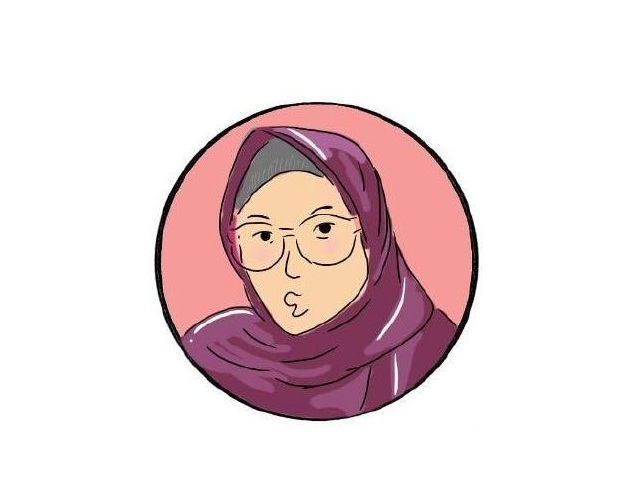

About Me

Halo! Panggil saja aku Risna, seorang lulusan teknik biomedis yang suka tentang tech, kesehatan, dan dunia game. Pengennya jadi data analyst di dunia kesehatan, tapi sekarang masih jadi mba-mba di lingkup obat-obatan. laman ini akan kudedikasikan sebagai laman portofolioku yang akan di update berkala untuk switch career. Sekalian untuk lanjut studi Master (S2) tapi nunggu ada dananya ada (hehe). Semoga bisa lanjut di bidang digital health dan data science (amiinin ngga si) Oke segitu dulu, kalau mau tahu lebih lanjut bisa cek social media yang ada👍